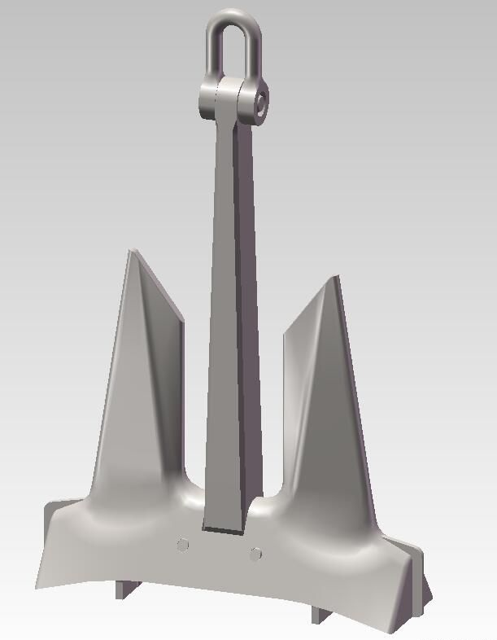
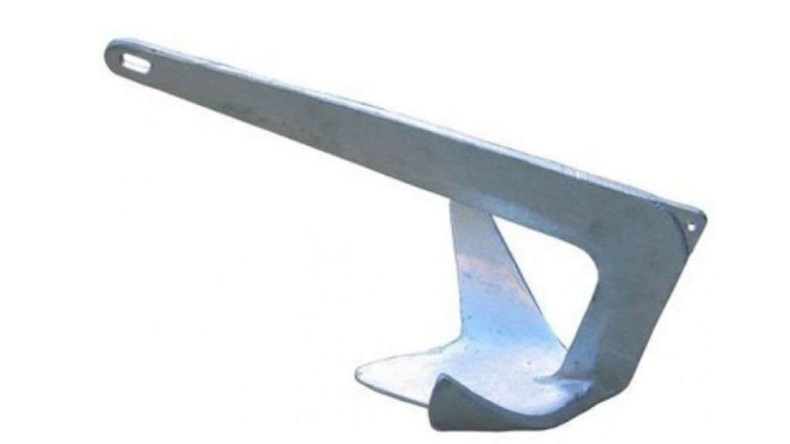

To jest link do kotwicy dolnej

Definiowanie kotwicy w konkretnym miejscu dokumentu HTML
i wskazanie tej kotwicy w linku do tego dokumentu,
spowoduje po jego otwarciu, przewinięcie –
tak aby wiersz zawierający kotwicę znajdował się jak najbliżej górnej krawędzi okna przeglądarki.
Aby było to przewijać dodamy dwa rysunki kotwice oraz linie puste,
a następnie, definiujemy dwie kotwice.
To jest link do kotwicy górnej
